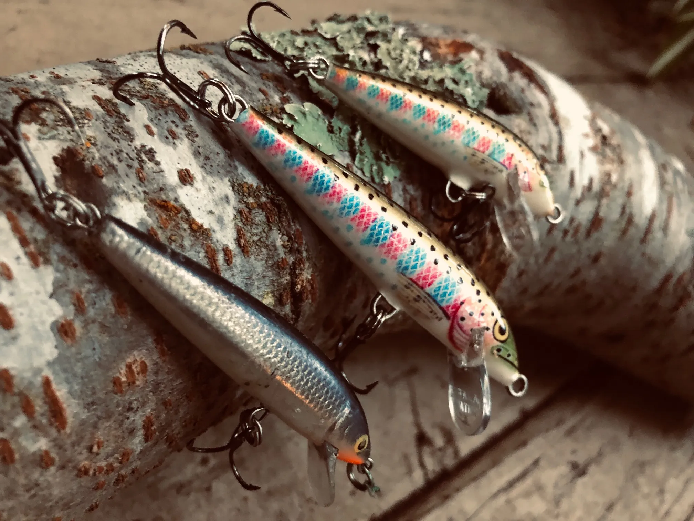

Domino Fishing Lure for Trolling and Mass Water
This fishing lure, known as the "Domino Lure," features a distinctive design with a gold body adorned with red polka dots. The combination of these colors is particularly effective in attracting trout, as the reflective gold surface mimics the flash of small fish or other prey in the water, while the red dots provide a striking contrast that grabs the attention of predatory fish. Trout are especially drawn to the Domino Lure due to its unique movement and visual appeal. The lure's design causes it to wobble and dart erratically when retrieved, mimicking the behavior of an injured fish. This action triggers the trout's predatory instincts, making them more likely to strike. Additionally, the bright colors are easily visible even in murky water, increasing the lure's effectiveness in various fishing conditions. The triple hook attached to the lure ensures a secure catch, reducing the chances of the trout escaping once it bites. This makes the Domino Lure a reliable choice for anglers targeting trout in streams, rivers, and lakes. Its durability and eye-catching design make it a staple in any fisherman's tackle box.
Kastmasters
The Kastmaster Bucktail Lure, as depicted in the image, is a versatile and highly effective lure known for its unique design and ability to attract a wide variety of fish, particularly trout. This lure features a sleek, metallic body that mimics the appearance of a small baitfish, reflecting light to create a flashing effect that catches the eye of predatory fish. The addition of a bucktail, or feather-like material, enhances the lure's appeal by adding movement and a lifelike appearance in the water. Trout are especially attracted to the Kastmaster Bucktail Lure due to its realistic swimming action and the visual stimulation provided by the reflective metal and fluttering bucktail. The lure's weight distribution ensures it can be cast long distances with precision, making it ideal for reaching deeper waters or distant fish. When retrieved, the Kastmaster Bucktail Lure exhibits a wobbling motion that simulates an injured or fleeing baitfish, triggering the trout's natural predatory instincts. Equipped with a sharp treble hook, this lure ensures a strong and secure catch, minimizing the chances of the fish escaping. The Kastmaster Bucktail Lure's durable construction makes it a reliable choice for various fishing environments, from fast-moving streams to calm lakes. Its effectiveness and versatility make it a must-have in any angler's tackle box, especially for those targeting trout.
Black Panther Martin Spinner

The Panther Martin Lure, as seen in the image, is a renowned and highly effective fishing lure that has been a favorite among anglers for decades. Its distinctive design features a spinning blade and a weighted body, which together create a unique combination of flash and vibration in the water. This lure is particularly effective for attracting trout, as the spinning blade mimics the appearance and movement of small prey, drawing the attention of predatory fish. Trout are highly attracted to the Panther Martin Lure due to its ability to generate significant underwater noise and visual appeal. The spinning blade reflects light, creating a flashing effect that is highly visible even in murky waters. Additionally, the vibrations produced by the blade simulate the movement of an injured baitfish, triggering the trout's instinct to strike. The weighted body allows for long and accurate casts, making it easier to reach trout in deeper or more distant waters. Equipped with a sharp treble hook, the Panther Martin Lure ensures a secure catch, reducing the likelihood of the trout escaping once hooked. Its durable construction and reliable performance make it suitable for various fishing conditions, from fast-flowing rivers to tranquil lakes. Whether you're a seasoned angler or a novice, the Panther Martin Lure is a valuable addition to your fishing gear, offering an effective and proven method for catching trout.
Spoon Variety
The variety of spoons shown in the image exemplifies the importance of having a diverse selection of colors in your fishing tackle. Each spoon features a unique combination of colors and patterns, from vibrant yellow and red to subtle blues and greens. This assortment is particularly beneficial for trout fishing, as trout can be unpredictable and may respond differently to various colors on any given day. Anglers often refer to this phenomenon as trout "having a color of the day," meaning that the effectiveness of a lure can vary based on the conditions and the trout's preferences at that time. Having a range of spoon colors allows you to experiment and find the most effective lure for the current fishing conditions. For instance, on sunny days with clear water, a brightly colored spoon may be more visible and attractive to trout, while on overcast days or in murky waters, a spoon with more subdued, natural colors might yield better results. The reflective surfaces and distinctive patterns of these spoons also mimic the appearance of baitfish, making them irresistible to predatory trout. Equipped with sharp treble hooks, these spoons ensure a secure catch once the trout bites. Their durable construction and versatile design make them suitable for various fishing environments, from fast-moving streams to deep lakes. By carrying an assortment of spoon colors, you increase your chances of success, adapting to the trout's changing preferences and ensuring a productive and enjoyable fishing experience.
Crankbaits
The trout crankbait shown in the image is an excellent choice for anglers targeting trout in a variety of fishing conditions. This lure features a lifelike design that closely resembles a small baitfish, complete with realistic color patterns and detailed markings. Its sleek body is equipped with two sharp treble hooks, ensuring a secure catch once the trout strikes. Trout are particularly attracted to this crankbait due to its realistic swimming action. When retrieved, the lure dives and wobbles in the water, mimicking the natural movement of an injured or fleeing baitfish. This erratic motion triggers the predatory instincts of trout, making them more likely to attack. The built-in lip at the front of the crankbait helps it to dive to the desired depth quickly, making it effective for both shallow and deeper waters. This crankbait is versatile and can be used in various fishing environments. In clear water conditions, its lifelike appearance and natural color pattern make it highly visible to trout, while in murkier waters, its movement and vibration help to attract fish. It's particularly effective in rivers and streams where trout are actively hunting for prey. Additionally, the lure's durable construction ensures it can withstand repeated strikes and rough conditions. Whether you're fishing in fast-moving currents or calm lakes, this trout crankbait is a reliable and effective choice. By incorporating this lure into your tackle box, you can increase your chances of a successful and enjoyable fishing experience, adapting to different conditions and trout behaviors.
WORMS!
The image showcases a container of worms, a timeless and highly effective bait for fishing that has been used by anglers for generations. Worms are known for their natural appeal to a wide variety of fish species, particularly trout. Their wriggling motion and earthy scent are irresistible to fish, making them a go-to bait for both novice and experienced fishermen. Worms are especially advantageous due to their versatility and effectiveness in various fishing conditions. Whether you're fishing in clear streams, murky rivers, or calm lakes, worms can attract fish in all environments. Their natural movement in the water mimics live prey, enticing fish to strike. Worms can be used with different fishing techniques, such as bottom fishing, float fishing, or even on a simple hook and line, making them suitable for a variety of setups. This bait's simplicity and availability add to its timeless appeal. Worms are easy to find, either by digging in your backyard or purchasing from a bait shop, and they are easy to keep alive and fresh for extended periods. When used properly, worms can be highly effective, whether you're targeting small panfish or larger species like trout and bass. Using worms as bait not only increases your chances of a successful catch but also connects you to the traditional and enduring practices of fishing. Their natural effectiveness and versatility make them an indispensable part of any angler's tackle box, ensuring a reliable and productive fishing experience every time.
General Gear
When heading out for a trout fishing trip, it's essential to be well-equipped with the right gear to ensure a successful and enjoyable experience. Beyond the rod, reel, and lures, there are several other pieces of equipment that every trout angler should consider bringing along. First and foremost, a good pair of pliers and wire cutters are indispensable tools. Pliers are essential for removing hooks from fish, bending wires, and adjusting tackle, while wire cutters are perfect for snipping fishing lines, cutting through leaders, or trimming down materials for custom rigs. Additionally, having a pair of fishing scissors can be incredibly useful for cutting lines and other materials with precision. A sharp, durable fishing knife is another must-have item. It is crucial for preparing bait, cleaning fish, and performing various tasks while on a fishing trip. Make sure your knife is easy to handle and always kept sharp for efficiency. A small tackle box is also vital for organizing and accessing smaller pieces of gear such as weights and hooks. Weights help ensure your bait sinks to the desired depth, and hooks come in various sizes to match different types of bait and target fish. Waders are an essential piece of gear for trout fishing, especially when fishing in streams or rivers. They allow you to wade into the water, giving you access to areas that are otherwise difficult to reach from the shore. Waders keep you dry and comfortable, allowing you to fish for longer periods without getting wet and cold. Make sure to choose waders that are appropriate for the season and water temperature. A reliable fishing net is also crucial. A net helps to safely and efficiently land fish, preventing them from escaping at the last moment and reducing stress on the fish if you intend to release it. Opt for a net with a rubber or silicone mesh to minimize harm to the fish's scales and slime coat. It's also wise to bring along a small first aid kit to be prepared for any minor injuries or emergencies that may occur during your trip. Accidents can happen, and having basic medical supplies on hand can make a big difference. Weather-appropriate clothing and accessories are crucial for comfort and safety while fishing. A waterproof jacket, hat, and polarized sunglasses will protect you from the elements and improve your visibility on the water. Polarized sunglasses, in particular, reduce glare and allow you to see beneath the water's surface, helping you spot fish and assess water conditions more effectively. Finally, consider carrying some insect repellent and sunscreen. Fishing in natural environments often means dealing with insects, and protecting your skin from harmful UV rays is essential during long hours spent outdoors. By equipping yourself with this comprehensive set of tools and gear specifically aimed at trout fishing, you can enhance your fishing experience, increase your chances of success, and ensure a safe and enjoyable time on the water.
Rod, Reel & Line
An angler needs a good rod and reel, specifically a spinning rod and reel combo, to enhance their trout fishing experience significantly. The choice of rod and reel is crucial, as the right combination can improve casting accuracy, control, and fish retrieval, which are all essential for successful trout fishing. When selecting a rod, it's important for anglers to consider the specific locations they will be fishing, as the environment can greatly influence the size and type of rod required. In areas with high brush or narrow, thin streams, a shorter rod is ideal. These environments require maneuverability and precise casting to navigate tight spaces and avoid snagging on vegetation. A shorter rod allows anglers to make quick, accurate casts and effectively handle fish in confined areas. Conversely, in open rivers with rocky beds, a longer rod is advantageous. It provides better casting distance and versatility, allowing anglers to reach various spots and cover more water. The extended length offers the ability to cast over obstacles and target fish in deeper or more remote areas, making it ideal for larger, open environments. The quality and type of fishing line are equally important considerations. Anglers must take into account water quality when selecting their line. If an angler frequents multiple locations with varying water clarity, clean monofilament is a versatile choice that performs well in different conditions. For those who fish consistently in one area, matching the line color to the water can reduce visibility and make the line less detectable to fish. When choosing the line strength, the type of water body and its conditions play a critical role. In slow-moving rivers or open ponds, using the lightest line possible is wise, as it is less visible and more likely to entice trout to bite. For smaller fish, opting for a 2-4lb line is ideal. This lighter line is less noticeable to trout, which have excellent vision and can be wary of visible lines. In fast currents or areas known for larger fish, a 4-6lb line is more suitable. It provides the strength needed to handle stronger pulls and larger catches without compromising too much on visibility. An often overlooked but crucial feature of spinning reels is the drag system. The drag system allows anglers to set the amount of resistance a fish feels when it pulls on the line. Properly adjusted drag lets larger fish take the line and run, which tires them out without breaking the line. This is particularly important when using lighter lines, such as a 4lb line. There's a common misconception that a 4lb line can only catch fish up to 4lbs, but with skillful use of the drag system, anglers can land much larger fish. By letting the fish run and using the drag to apply consistent pressure, anglers can tire out even big fish, making it possible to catch them on lighter gear. It is crucial to emphasize the importance of using the thinnest and lightest line necessary to achieve the goal. Trout are highly perceptive and will often avoid lures if the line is too visible. By using a lighter line, anglers can increase their chances of attracting and catching trout. Additionally, maintaining the line's cleanliness and matching it to the water conditions can further enhance its effectiveness. By carefully selecting the appropriate rod, reel, and line, anglers can significantly increase their chances of a successful and enjoyable trout fishing experience. Investing in high-quality gear that matches the specific fishing environment and conditions ensures that anglers are well-prepared to handle various challenges and opportunities on the water. This thoughtful approach to equipment selection can make a substantial difference in the effectiveness and satisfaction of any fishing trip.
Tackle Storage

Investing in a fishing backpack rather than a traditional tackle box can significantly enhance a trout fishing experience. Trout fishing often requires anglers to be on the move, as trout typically do not school and tend to be scattered across various locations. When trout are found, it's common to catch only a few before needing to move on to a new spot. A fishing backpack offers the convenience and mobility that a tackle box cannot. With a backpack, anglers can easily carry all their essential gear, including lures, hooks, lines, and tools, while keeping their hands free for navigating tricky terrain or casting. The multiple compartments in a fishing backpack allow for organized storage, making it easy to access gear quickly without having to rummage through a traditional tackle box. Additionally, backpacks are generally more comfortable to carry over long distances, distributing weight evenly across the shoulders and back. This mobility and convenience are crucial for trout fishing, where being able to move swiftly and efficiently between locations can make a significant difference in the success of the outing. By investing in a fishing backpack, anglers can ensure they are well-prepared and agile, ready to follow the trout wherever they may lead.
Polarized Glasses
Polarized glasses are an essential tool for any serious angler, providing a significant advantage when fishing. These specialized lenses reduce glare from the water's surface, allowing for a clearer and more detailed view beneath. With polarized glasses, it becomes easier to see what fish are feeding on, enabling anglers to select the most effective bait or lure. Additionally, these glasses help in determining water quality by making it simpler to spot debris, algae, or discoloration that might indicate pollution or poor conditions. Polarized lenses also enhance the ability to judge water speed and depth, crucial factors for effective casting and lure presentation. By offering a better view of underwater structures and vegetation, polarized glasses aid in locating prime fishing spots and avoiding snags. Overall, they significantly enhance situational awareness, contributing to a more successful and enjoyable fishing experience. While it might seem unconventional to consider polarized glasses as essential fishing gear, their benefits are undeniable. Many anglers may overlook the importance of having a pair of these glasses, but those who use them quickly realize the substantial edge they provide. The ability to see through the surface glare allows fishermen to identify schools of fish, track their movements, and observe their behavior in ways that are impossible with the naked eye. This insight can be the difference between a fruitful day of fishing and coming home empty-handed. Moreover, polarized glasses protect the eyes from harmful UV rays, adding an element of safety to long hours spent in the sun. For these reasons, every fisherman, regardless of their experience level, should invest in a good pair of polarized glasses. They not only improve the chances of a successful catch but also enhance the overall fishing experience by providing a clearer, more detailed view of the aquatic environment.